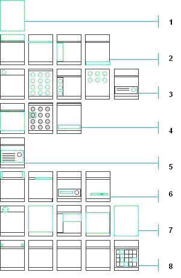

Theme Editing Process
In Carbide.ui, the themes are created by customizing the
phone's default UI images and sounds. The different parts of theme
creation process are listed below.
- Create basic theme background images and general full screen
background images.
- Modify icon, text, and line colors.
- Add images that change the outlook of specific areas.
- Create application menu and submenu icons.
- Adjust list, grid, and input highlights.
- Define graphics for pop-up windows.
- Adjust miscellaneous icons and theme components.
- Add application-specific theme items.
- Add sounds and a screen saver.
- Create a .sis file of your theme and protect the theme using DRM.
Send the theme to a separate file system or mobile phone.

Figure: Visible components of
the
theme creation process